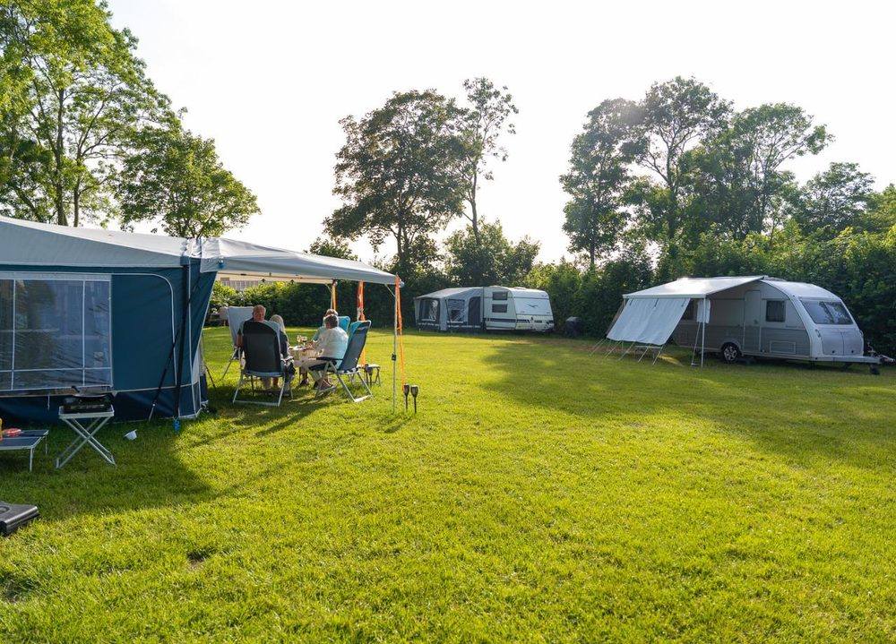
Kampeerplaats
25 zeer ruime plaatsen van 180 tot 200 m², met stroom, water en afvoer op elke plek.
vanaf € 25 per nachtMeer info
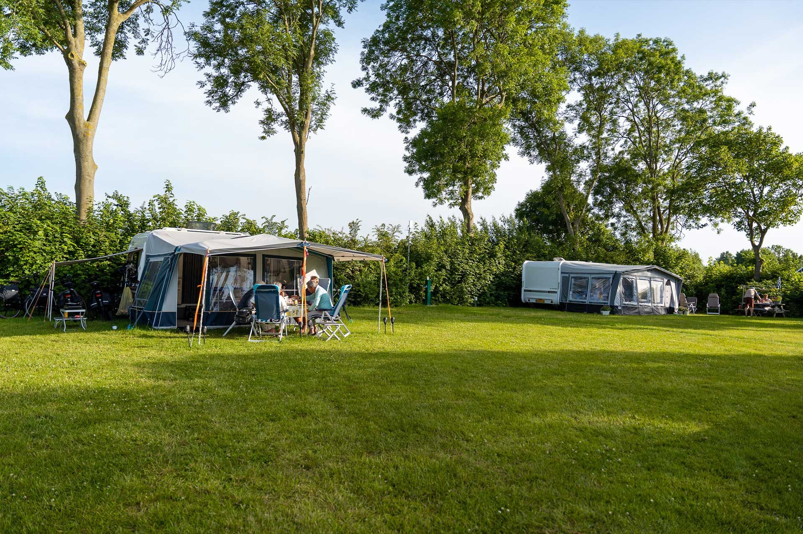
25 ruime plaatsen en een nieuw chalet achter onze boerderij, tussen Koudekerke en Dishoek. Via Bos Dishoek loopt u zo naar het strand.
Kom met uw tent, caravan of camper, of verblijf in ons chalet. Alle plaatsen zijn ruim, groen en van elkaar gescheiden door een haag.

25 zeer ruime plaatsen van 180 tot 200 m², met stroom, water en afvoer op elke plek.
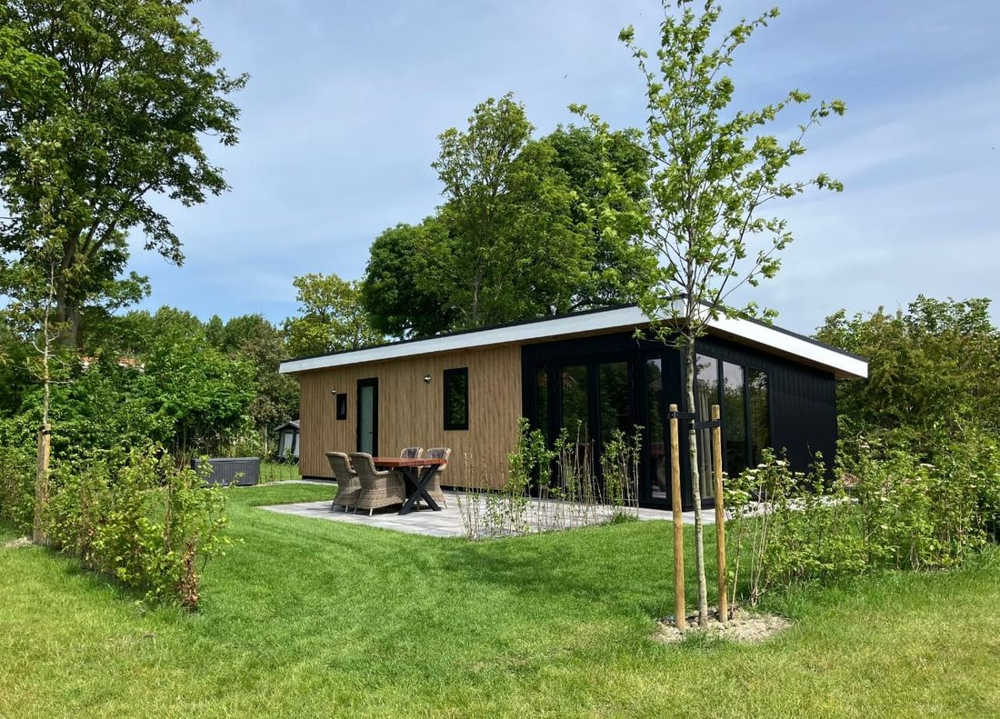
Modern chalet voor 4 personen, met vloerverwarming en een terras op het zuiden.
Ervaringen van gasten die bij ons kampeerden.
"Heerlijke camping met mooie plekken, en belangrijk met brandschoon sanitair. (…) Via een natuurgebied loop je zo naar het strand. We gaan zeker nog een keer terug komen op de camping van de familie Kluijfhout."E&J JonkerGastervaring
"Zeer vriendelijke eigenaren en prachtige en vooral ruime plekken op prachtige grasvelden. (…) Strand 10 min en winkels op 5 min ( fiets) . Kortom, perfecte vakantieplek in Zeeland."Piet DuinkerkenGastervaring
"Een top minicamping met zeer grote plaatsen op gras. Rustig, heel schoon sanitair, dichtbij het strand, ong. 10min. op de fiets. (…) Verder op de camping een trampoline, een speelhuisje, schommels en skelters voor de kinderen. Heerlijk ongecompliceerd."Margreeth EveleensGastervaring
"De plaatsen zijn ruim en je kijkt lekker van je af over het veld. Het sanitair is zonder muntjes maar gratis 6 minuten en brandschoon! Wij hebben deze camping echt zeer goed ervaren en vinden dit echt een pareltje in Zeeland."Angeline RijnsentGastervaring
Zo noemen onze kleine gasten ons niet voor niets. Op de boerderij is volop ruimte om buiten te spelen en dieren te ontdekken.
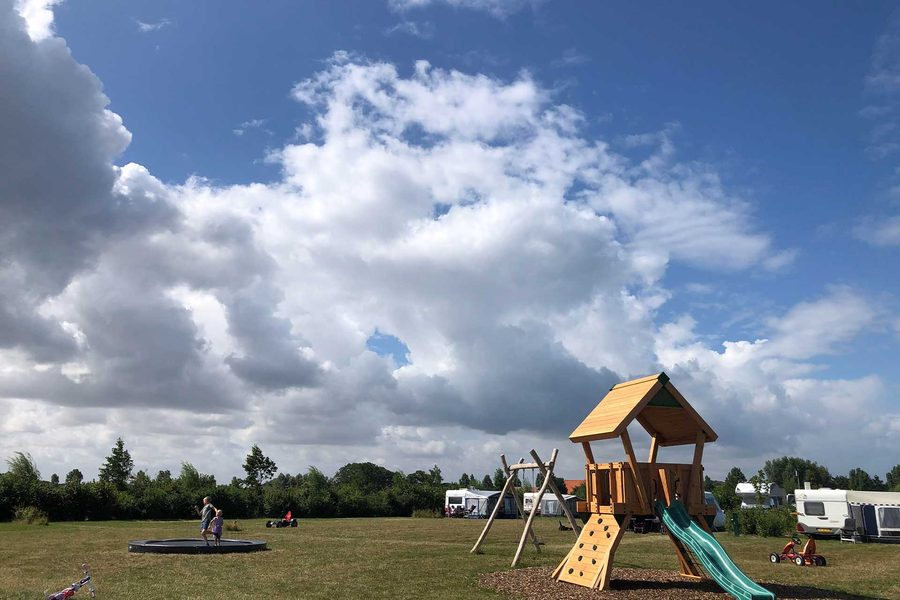
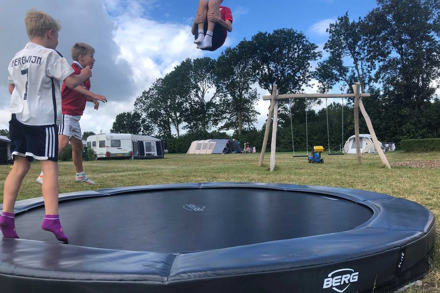
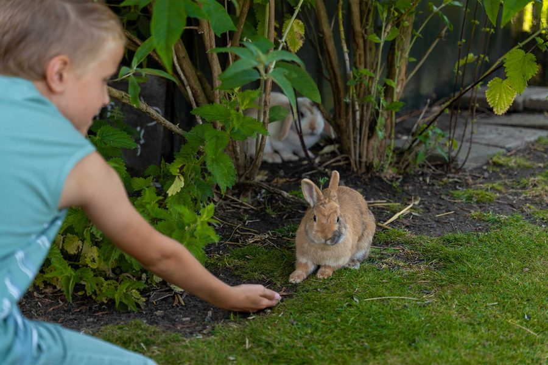
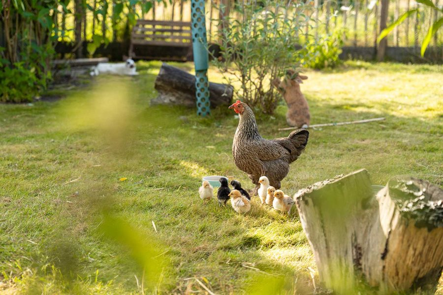
In de zomervakantie bakken we samen een broodje op de vuurschaal, gaan we op insectenavontuur met de boerin of roosteren we 's avonds marshmallows.
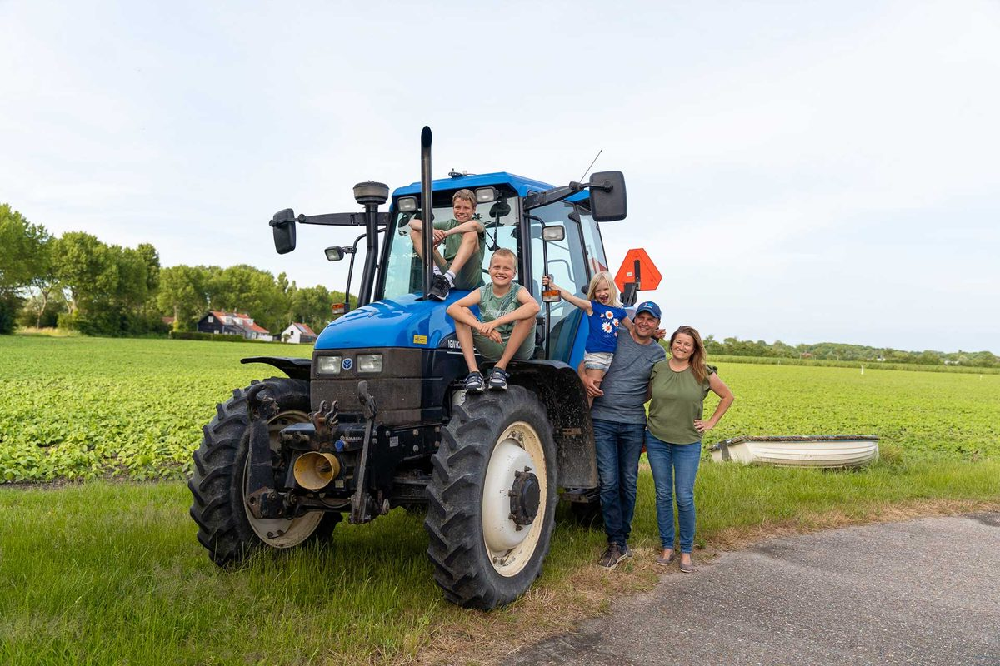
Sinds 2015 is Westerwijk ons thuis, en sinds 2016 runnen we samen de camping. Lourus is akkerbouwer, de 8e generatie die op Walcherse grond boert. De camping ligt achter de boerderij, tussen onze akkers.
Marianne is het aanspreekpunt van de camping. Sinds 2018 is zij Gastheer van het landschap Walcheren en vertelt ze u graag over de mooiste plekjes van het eiland.
Koudekerke ligt op 2 km, met supermarkten en een bakker. Middelburg en Vlissingen zijn goed te fietsen.
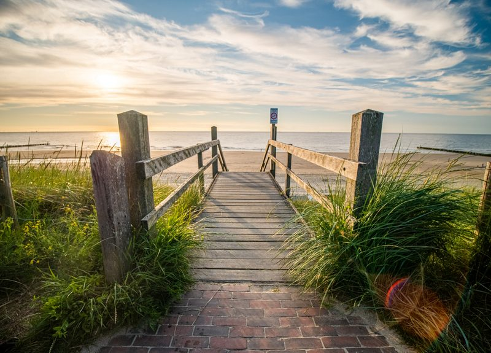
Rustig strand met paalhoofden en de Blauwe Vlag. Lopend via het karrenspoor door Bos Dishoek.
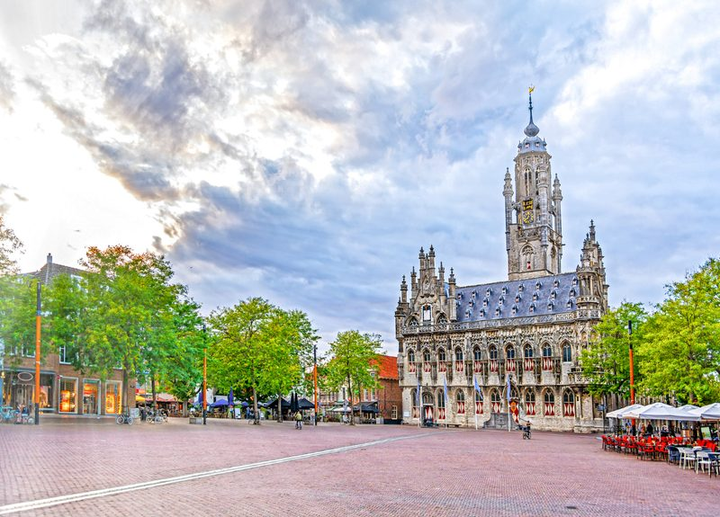
Monumentale stad met statige herenhuizen en oude pakhuizen. Winkelen en cultuur.
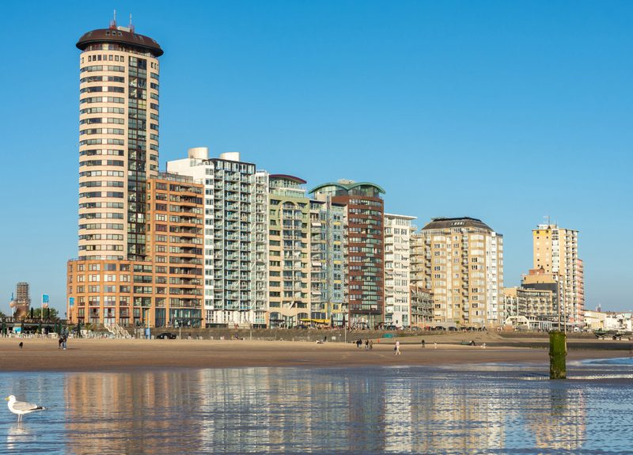
Havenstad met de langste zeeboulevard van Nederland en het MuZeeum.
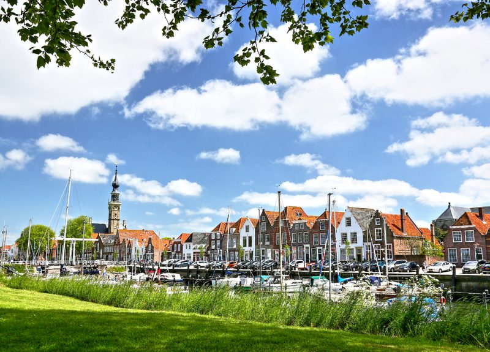
Nostalgisch stadje met een hoog Anton Pieck-gehalte.
Laat weten wanneer u wilt komen en met hoeveel personen. We laten u zo snel mogelijk weten of er plek is.
Marianne helpt u graag verder. Wilt u de camping eerst bekijken? Dat mag altijd.